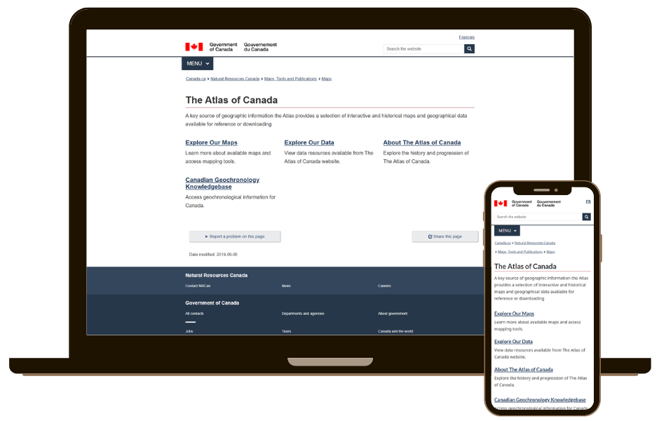

The Atlas of Canada Website Redesign
Government of Canada - Natural Resources Canada
Timeline: 2022 - 2025
Role: Graphic Designer, UX Consultant, and Communications Co-lead
Tools: Illustrator · Photoshop · XD · RedMine · M365 · Trello
Overview
Originally published as print editions starting in 1906, the Atlas of Canada launched its first digital presence with the 6th edition in 1999, followed by several website iterations leading up to the 2020s. As part of the latest redesign team, I helped modernize its navigation, visual design, and content structure, continuing the Atlas's shift from print to digital while enhancing usability, accessibility, and preserving its historic identity.
Problem
The previous Atlas website had an outdated layout, limited accessibility compliance, and lacked visual identity. Users struggled to find information efficiently, and the site no longer met evolving federal identity and accessibility standards.
